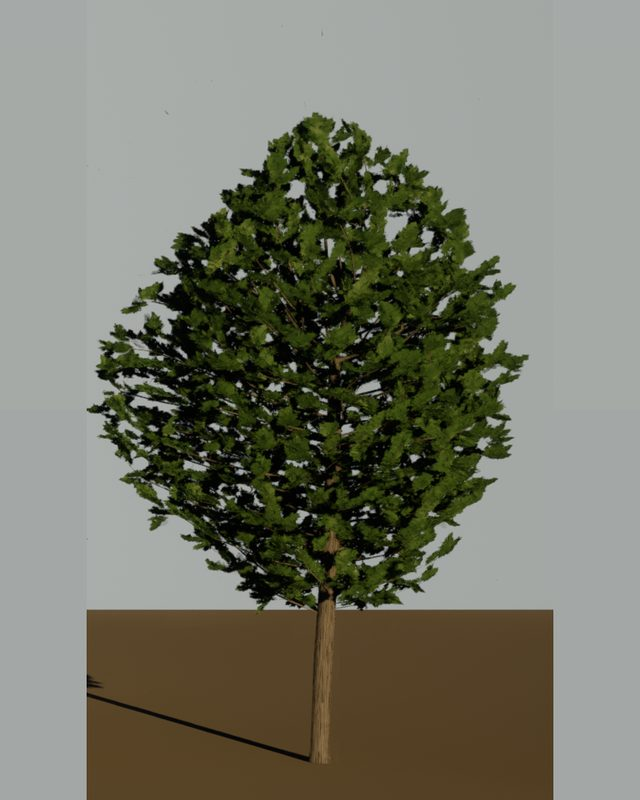
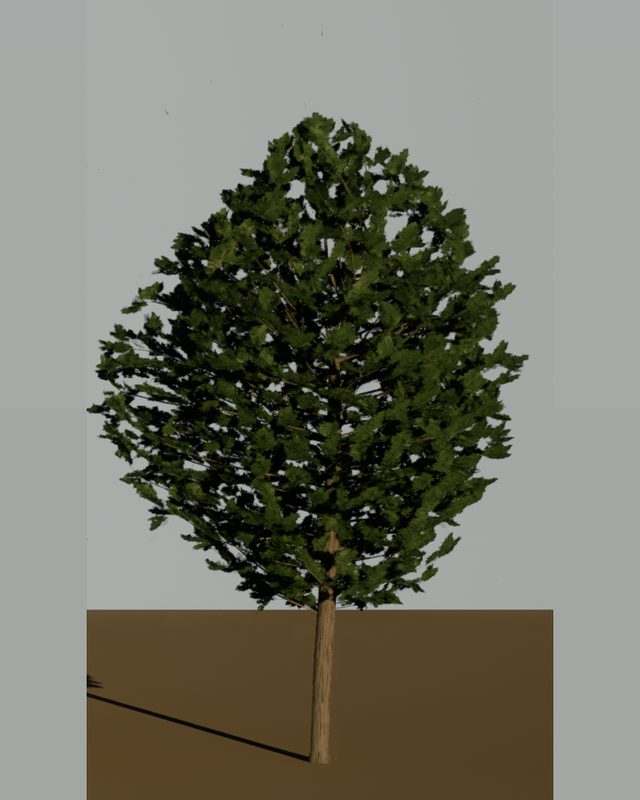
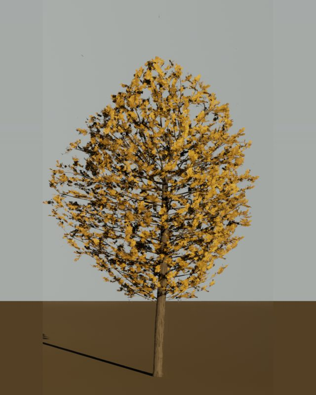
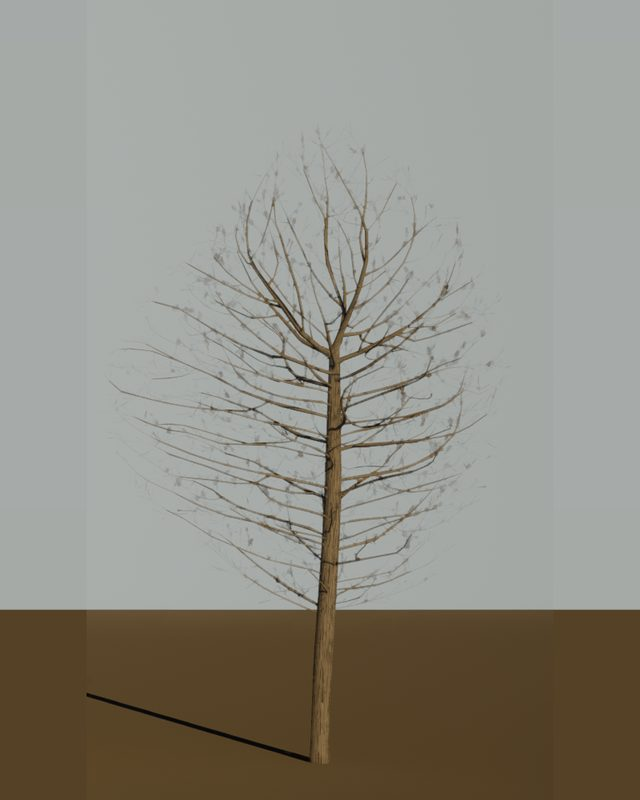
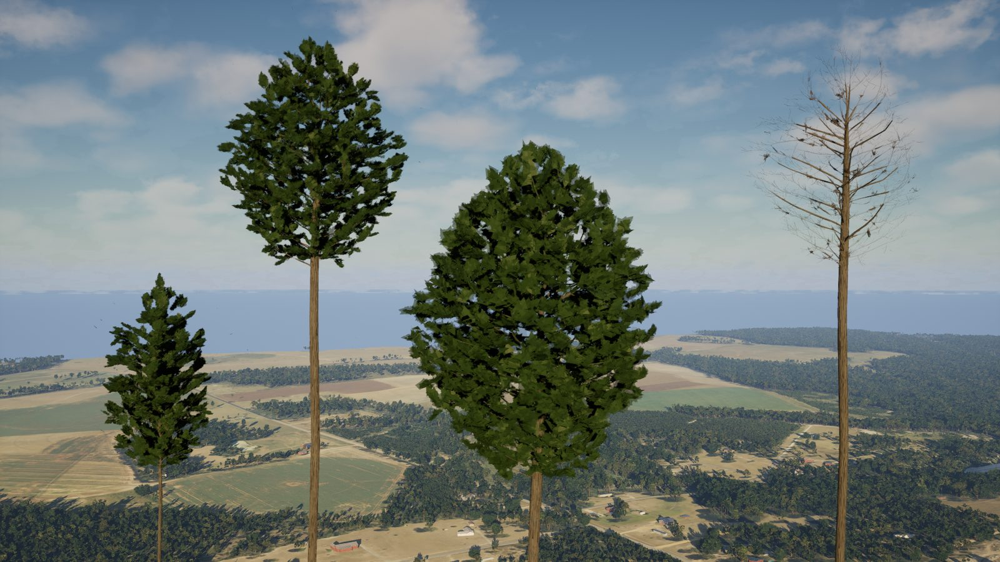
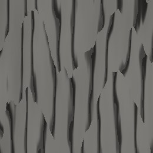

Trees · spec sheet
Yellow-poplar
Liriodendron tulipifera · Tulip-shaped leaves, tall straight trunk; yellow in fall.
In films
4.9%Georgia basal area
10.6%North Carolina basal area
16.3%Western NC basal area





Leaf
Bark

Palette
SummerFall 1Fall 2Fall 3Fall 4
Season calendar
The leaf colour and cover the season engine draws on each day; ticks mark leaf-out, the start of the turn and of the drop.
Facts
- Leaf
- tulip · 12 cm · alternate
- Leaves a spray
- 12-18
- Leaf out
- Mar 21
- Turns
- Oct 7, over 25 days
- Drops
- Oct 22, over 25 days
- Bark preset
- poplar
- Built
- 9 trees
- Sprays a tree
- 2,165 (median)
- Limb triangles
- 35,412 (median)
- FIA code
- 621
Forms
| Form | What | Height m | DBH cm | Crown base | Crown radius m | Crown envelope |
|---|---|---|---|---|---|---|
| P | pole, young stand | 18.0 | 22 | 40% | 2.8 | cone_round |
| F | tall forest tree | 32.0 | 55 | 58% | 4.6 | ovoid |
| O | open-grown | 25.0 | 70 | 25% | 7.0 | ovoid |